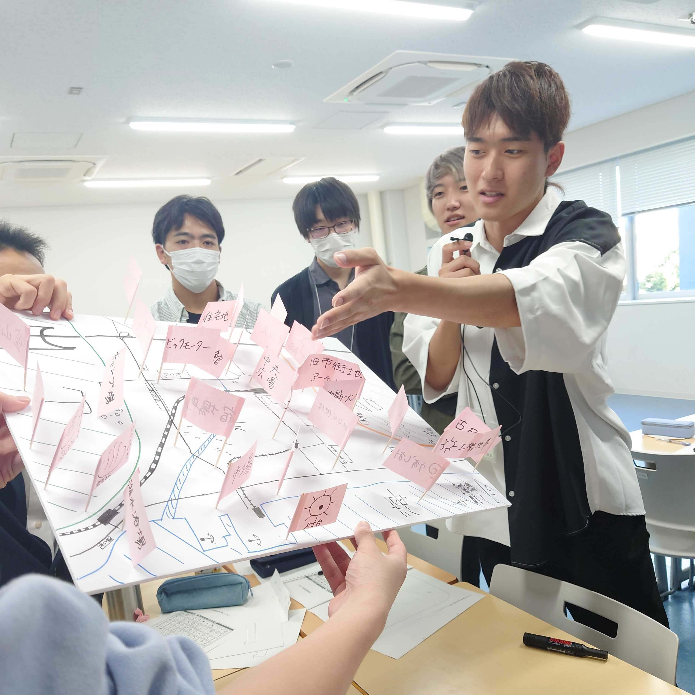

FEATURES
特集
地理系ワークショップ「つくマップ」を開催しました
2023/10/7
2023年10月7日に、当会主催の地理系ワークショップ「つくマップ」を開催し、つくば市の小学生と交流しました。
まず、「つくば」をお題に「メンタルマップ」を作成し、自分が住む地域やその周辺についての認識を確認しました。また、各々が書いた地図を比較し、「つくば」への理解を深めました。
説明の様子
続いて、複数の班に分かれて「空想地図」を作成しました。事前に当会員が用意した山、川、鉄道などの要素を含む地図の上に、建物ピンを刺して地図に情報を加えていきました。実際の街ならば、どこにどんな施設があるかなどを一緒に考え、一つの街を創造しました。
「地図」について考え、一緒に活動することは当会員にとっても学びが多く、参加者の方々にも満足いただける企画となりました。